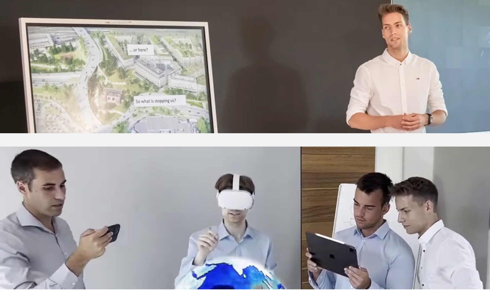
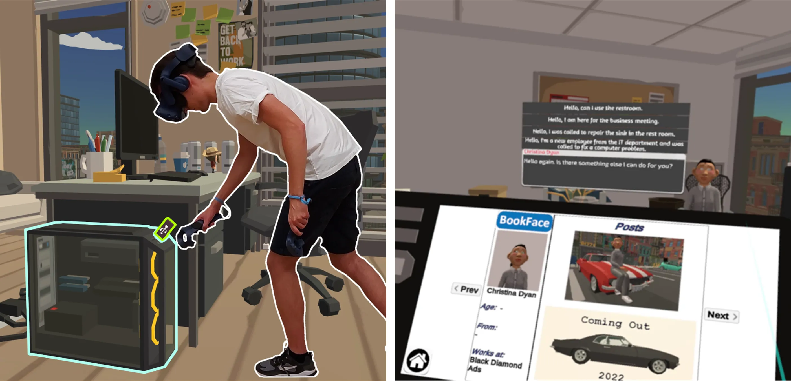
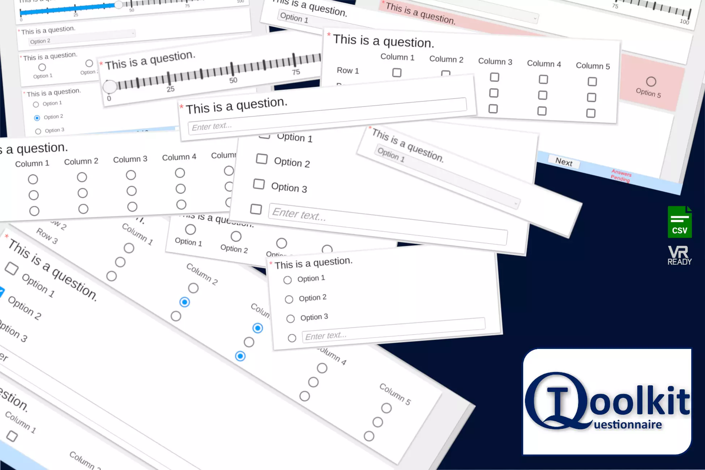

I treat entrepreneurship as research translation: building interactive systems that leave the lab, reach real users, and test whether HCI ideas remain useful under commercial, cultural, and educational constraints.
Co-Founder at Zefwih
At Zefwih, I translate HCI research into user-centered applications, prototypes, and digital products across consulting, XR, games, and interactive media.
My role connects research strategy, interaction design, technical prototyping, and evaluation, especially where usability, accessibility, learning, and user experience matter outside controlled studies.

The Social Engineer
With my colleagues at Zefwih, I created a room-scale VR serious game for social engineering awareness. The project uses interactive scenarios to help people experience, recognize, and reason about security risks.
The game was nominated for the German Computer Game Awards, selected as a finalist at the Games for Change Awards, received the CHI PLAY 2021 Audience Choice Award, and is available on Steam.

Research Tools
I also value entrepreneurship as a route for maintaining and disseminating reusable tools, Unity assets, and interaction prototypes that support research, teaching, and applied development.
This connects my academic focus on open, reusable artifacts with practical software that others can adapt, inspect, and build on, including the QuestionnaireToolkit Unity asset.
